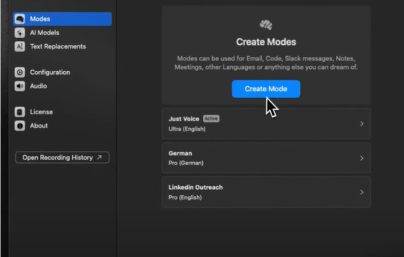
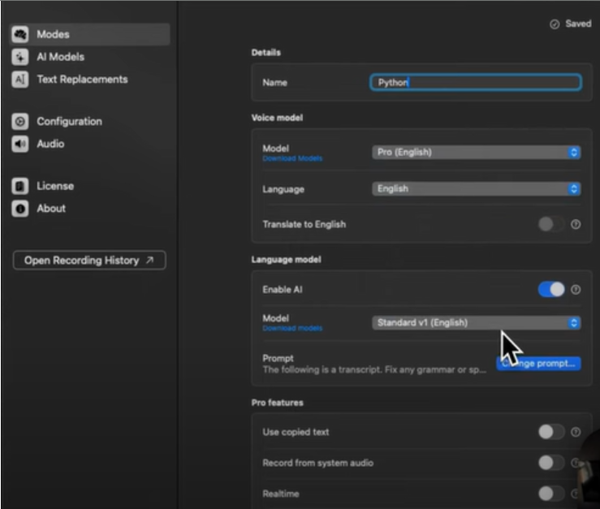
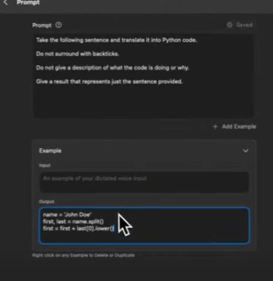

Writing Code
Introduction
One of the best parts of Superwhisper is that it can code for you.
The example below uses Python, but you can use any language.
To access this feature, you will have to create your mode.
For your mode, you will have to tell the mode what programming language to use, what formatting to use, and provide it with some context.
An example for the context could be that you tell your mode to not include any comments.
In other words, you will have to create a language prompt.
Once you set the mode, you can provide prompts to write the desired code.
Below are the steps showcasing how Superwhisper takes voice dictation and converts it into code
Steps


